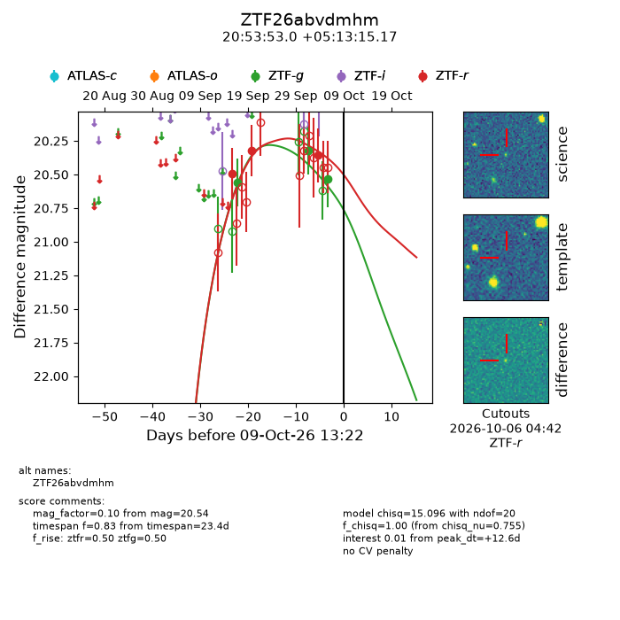
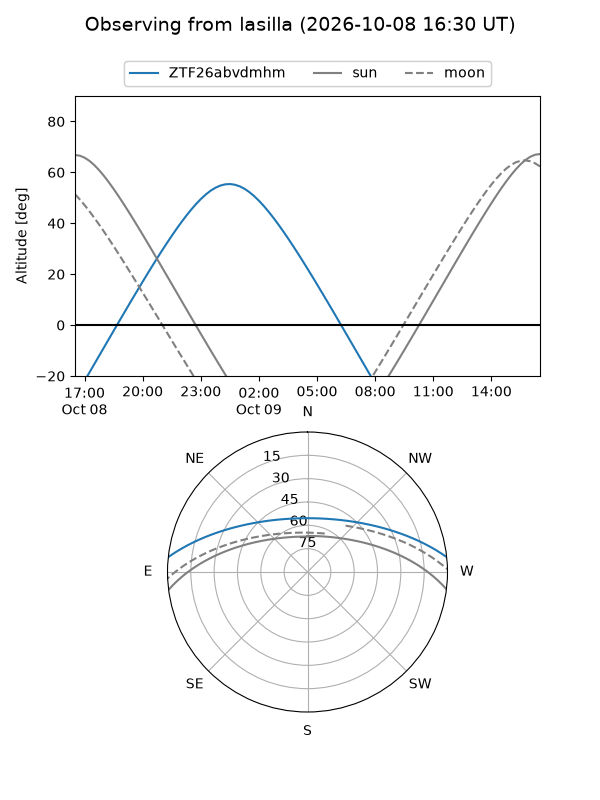
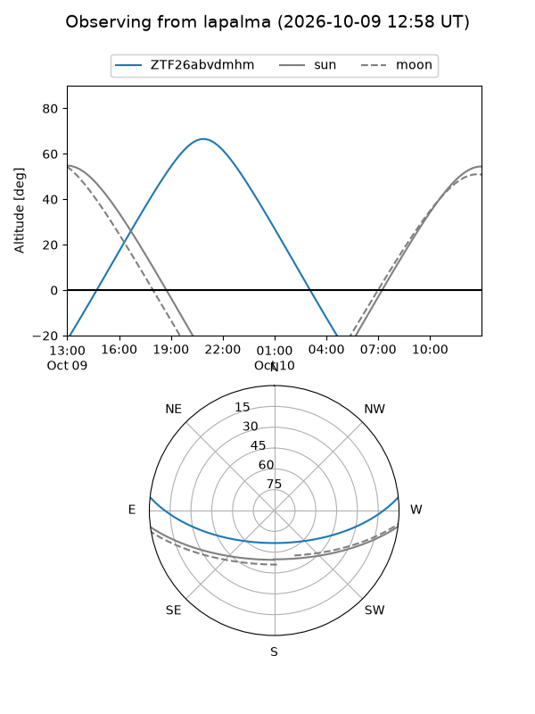
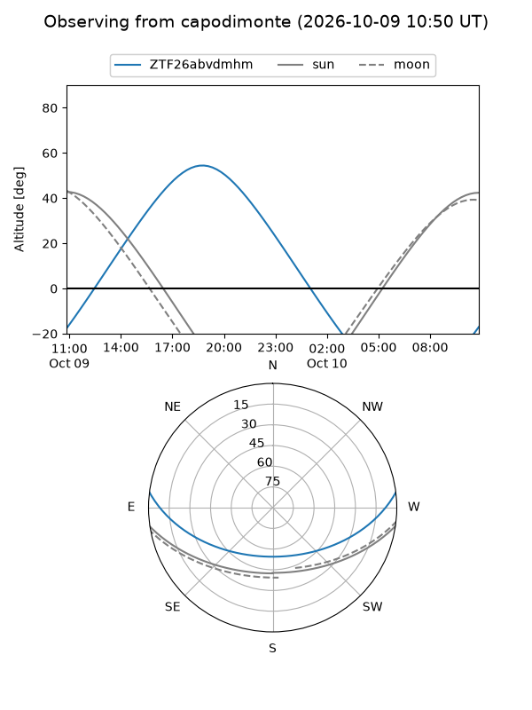
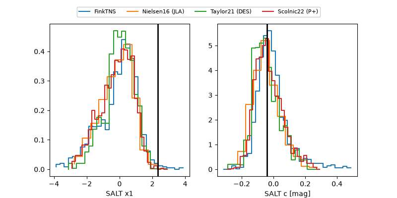

ZTF26abvdmhm
Target ZTF26abvdmhm at 2026-10-09 13:25
Aliases and brokers:
FINK-ZTF: ztf.fink-portal.org/ZTF26abvdmhm
Lasair-ZTF: lasair-ztf.lsst.ac.uk/objects/ZTF26abvdmhm
ALeRCE-ZTF: alerce.online/object/ZTF26abvdmhm
Direct TNS query: direct search
alt names
ZTF26abvdmhm (ztf,fink_ztf)
Coordinates:
equatorial (ra, dec) = 313.4710,+5.22088
equatorial (HMS+DMS) = 20:53:53.04,+05:13:15.17
galactic (l, b) = (52.9477,-24.19367)
Flags:
peak dt: +12.6
Photometry:
last ztfg=20.54, ztfr=20.36
3 ztfg, 3 ztfr detections
Lightcurve

Visibility



Additional plots
